Paul Cumming — me. I design, write and code. I do this in a house that perspires dust with animal intensity, and ordinarily on a laptop that after a few hours of use, starts to whine like a spoiled terrier. Then I continue to to design, write and code. The quickest way to fix my laptop fan is with my record player—the creak of old folk or weeping mid-(last) century jazz can do it, but if the canine howl of my computer fan reaches fever pitch, there's always blackened hardcore, grindcore, death metal. I highly recommend it, but have been informed it's inaccurate to call it a 'life hack'. I design, write and code in the distant wake of a Professional Writing and Editing degree, the near-imperceptible ripple of a Social Science(Environment) degree. The former leading to writing about microgreens for Peppermint, music for Warner and boxing for CNP, among a multitude of other delinquent projects. The latter lead to 13 evaporated years in bushland conservation, two semi-arthritic fingers, one arrest and 6 years as a professional firefighter. I design, write and code because I truly love it. Posters, editorial design, idiosyncratic banding work, you name it. And if I can collaborate with people trying to make the world greener and/or more wondrous, then all the better. Thanks for visiting, Paul